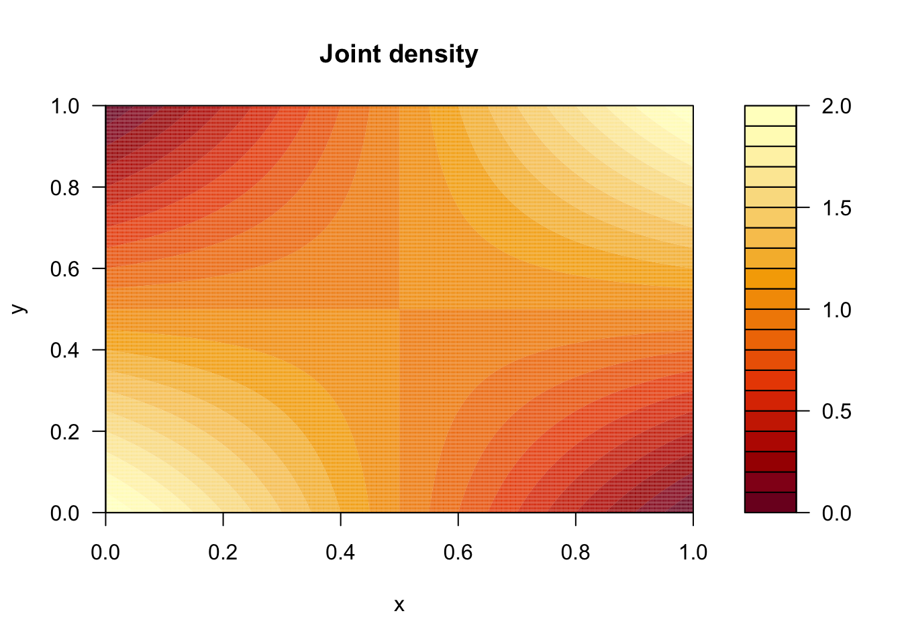
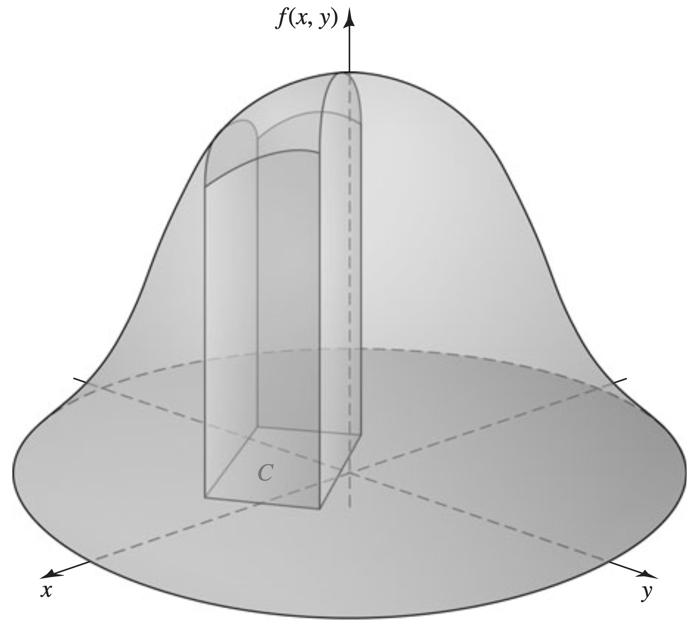
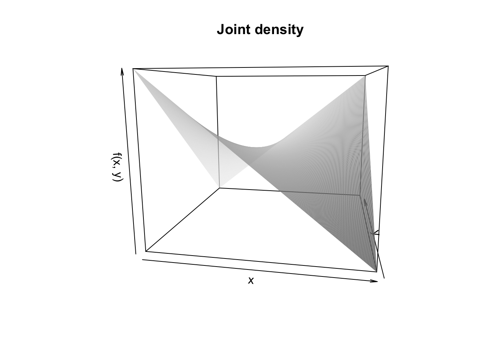
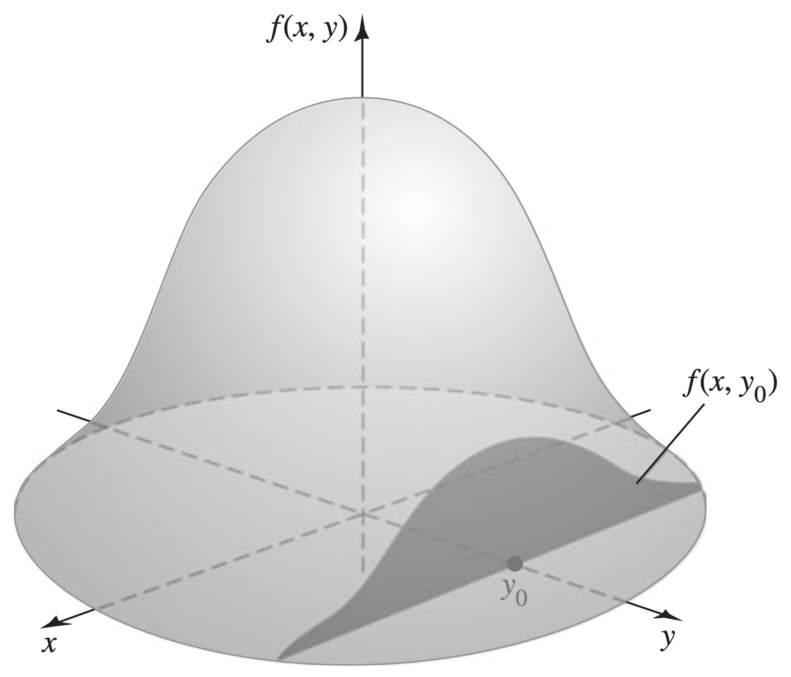

Joint distributions
I can easily time my life by the American political cycle. I was born in 1993, the first year of Bill Clinton’s presidency. I was in first grade during 2000-2001 when George Bush was elected. I was a freshman in high school during 2008-2009 when Barack Obama was elected. I was a freshman in college 2012 - 2013 when Obama was re-elected, and then I graduated college May 2016. So, the brief history of me: eight years of Clinton, eight years of Bush, eight years of Obama, and then the real fun began.
My first hint that the second two decades of my life were likely to be different from the first two came on June 23 2016. I was in a hotel room in Cambridge MA watching CNN, and it was announced that the UK had voted to leave the European Union (so-called Brexit). To be sure, many surprising things had happened in my lifetime up to that point: the Monica Lewinsky scandal, 9/11, Hurricane Katrina, the 2008 financial crisis, and so on. But in that hotel room that day, Brexit did feel different, and it felt like a harbinger of things to come: “if that can happen there, what’s about to happen in our own election?”
In other words, learning something about the outcome of one election forced me to reconsider my beliefs about the likely outcome of another. Let’s model this!
Dependent random variables and their joint distributions
Pretend it is May 2016. The future is uncertain, and we are contemplating two quantities: \(X\in[0,\,1]\) is the eventual proportion of votes for “Leave” in the Brexit referendum, and \(Y\in[0,\,1]\) is the eventual proportion of electoral college votes for Donald Trump in the 2016 presidential election. It eventually came to pass that
\[ \begin{aligned} X&=\frac{17,410,742}{33,551,983}\approx 0.5189\\ Y&=\frac{304}{538}\approx 0.5651. \end{aligned} \]
But in May 2016 we didn’t know that yet, so let’s think about the pair \((X,\,Y)\) from that vantage point:
- The value of the pair \((X,\,Y)\) was genuinely uncertain, so we can treat it as random.
The political scientists can tell you that both of these votes ended up being expressions of similar trends and forces. So my instincts that
However, they do not perfectly coincide. There are idiosyncratic, UK specific forces bearing on X and idiosyncratic US specific forces bearing on Y.
So, our goal is to model the joint behavior of two dependent random quantities. How do we do that? At a high level, the answer is the same as it ever was: write down a probability measure, just like in week 2.
Definition: joint distribution
If \(X\) and \(Y\) are jointly distributed random variables, then their joint range is the set of values \(\text{Range}(X,\, Y)\subseteq \mathbb{R}^2\) they can take on, and their joint distribution is a probability measure on \(\mathbb{R}^2\):
\[ A\mapsto P\left((X,\, Y)\in A\right),\quad A\subseteq \mathbb{R}^2. \]
How do you write down such a measure? Like in the univariate case, it depends on the type: discrete, continuous, mixed, etc. In our case, we have two continuous random variables. We can specifiy a joint distribution for them by writing down a joint probability density function (PDF)
Definition: joint probability density function
If \((X,\, Y)\) are jointly (absolutely) continuous, then their joint distribution can be described by a joint probability density function (joint pdf). This is a bivariate function \(f_{XY}:\mathbb{R}^2\to\mathbb{R}\) with the following properties:
\(f_{XY}(x,\, y)\geq 0\);
\(\int_{-\infty}^\infty\int_{-\infty}^\infty f_{XY}(x,\, y)\,\text{d} x\text{d} y=1\).
Given the joint pdf, we can compute the joint distribution by integrating:
\[ P\left((X,\, Y)\in C\right)=\underset{C}{\int\int}f_{XY}(x,\, y)\,\text{d} x\text{d} y,\quad C\subseteq\mathbb{R}^2 . \]
In the univariate case, probability corresponds to area under the density curve. In the bivariate case, probability corresponds to volume under the density surface, like this:

\[ f_{XY}(x,\,y) = \begin{cases} 1+(2x-1)(2y-1) & 0\leq x,y\leq 1\\ 0 & \text{else}. \end{cases} \]

Verify: the joint PDF integrates to 1
\[ \begin{aligned} \int_{-\infty}^\infty\int_{-\infty}^\infty f_{XY}(x,\,y)\,\text{d}y\,\text{d}x &= \int_{0}^1\int_{0}^1 [1+(2x-1)(2y-1)]\text{d}y\,\text{d}x \\ &= \int_{0}^1 \left[y+(2x-1)(y^2-y)\right]_0^1\text{d}x \\ &= \int_{0}^1 \left[1+(2x-1)(1^2-1)-0-(2x-1)(0^2-0)\right]\text{d}x \\ &= \int_{0}^1 1\,\text{d}x \\ &= [x]_0^1 \\ &= 1. \end{aligned} \]
Now that that’s settled, let’s use our model to answer some questions about the relationship between \(X\) and \(Y\):
- what is the probability that “Leave” and Trump both win?
- what is the probability that Trump’s vote share is larger than the “Leave” vote share?
- what is the probability that the “Leave” vote share is exactly equal to Trump’s vote share?
- if we learn that “Leave” won, what is the probability that Trump wins?
- if we learn, as we we did in June 2016, that “Leave” got exactly 0.5189, what is the probability that Trump wins?
All of these verbal descriptions can be translated into precise probability statements that involve the joint distribution of \(X\) and \(Y\) together, and we will evaluate them by doing a ton of integrating. Let’s see that in action.
Computing joint probabilities using double integration
What is the probability that “Leave” and Trump both win?
P(X > 1/2 and Y > 1/2)
PIC
\[ \begin{aligned} P\left(X>\frac{1}{2}\cap Y>\frac{1}{2}\right) &= \int_{1/2}^1\int_{1/2}^1 f_{XY}(x,\,y) \,\text{d}y\,\text{d}x \\ &= \int_{1/2}^1\int_{1/2}^1 [1+(2x-1)(2y-1)] \text{d}y\,\text{d}x \\ &= \int_{1/2}^1 [y+(2x-1)(y^2-y)]_{1/2}^1\text{d}x \\ &= \int_{1/2}^1 \left[1+(2x-1)(1^2-1)-\frac{1}{2}-(2x-1)\left(\left(\frac{1}{2}\right)^2-\frac{1}{2}\right)\right]\text{d}x \\ &= \int_{1/2}^1 \left[\frac{1}{2}+\frac{1}{4}(2x-1)\right]\text{d}x \\ &= \left[\frac{1}{2}x+\frac{1}{4}(x^2-x)\right]_{1/2}^1 \\ &= \frac{1}{2}\cdot 1+\frac{1}{4}(1^2-1)-\frac{1}{2}\frac{1}{2}-\frac{1}{4}\left(\left(\frac{1}{2}\right)^2-\frac{1}{2}\right) \\ &= \frac{1}{2}-\frac{1}{4}+\frac{1}{4}\frac{1}{4} \\ &= 5/16 \\ &= 0.3125. \end{aligned} \]
Before we launch into the calculation, make note of a few things:
- we know the joint PDF integrates to 1 over the entire unit square;
- we know that the region of integration here takes up half of the overall sample space;
- we know from the contour plot that the joint PDF has reflection symmetry over the line \(y=x\), so the \(y>x\) region is the mirror image of the \(y<x\) region.
Taken together, we might intuit our way to the conjecture that \(P(Y>X)=1/2\). Behold:
\[ \begin{aligned} P\left(Y>X\right) &= \int_{0}^1\int_{x}^1 f_{XY}(x,\,y) \,\text{d}y\,\text{d}x \\ &= \int_{0}^1\int_{x}^1 [1+(2x-1)(2y-1)] \,\text{d}y\,\text{d}x \\ &= \int_{0}^1 [y+(2x-1)(y^2-y)]_x^1\,\text{d}x \\ &= \int_{0}^1 [1+(2x-1)(1^2-1)-x-(2x-1)(x^2-x)]\,\text{d}x \\ &= \int_{0}^1 [1-x-2x^3+2x^2+x^2-x]\,\text{d}x \\ &= \int_{0}^1 [1-2x-2x^3+3x^2]\,\text{d}x \\ &= \left[x-x^2-\frac{1}{2}x^4+x^3\right]_0^1 \\ &= 1-1^2-\frac{1}{2}+1 \\ &= 1/2. \end{aligned} \]
P(X = Y)
\[ P(X=Y)=\int_0^1\int_y^y f_{XY}(x,\,y)\,\text{d}x\,\text{d}y=\int_0^10\,\text{d}y=0. \]
Note
Marginal and conditional distributions
Marginal distributions
Next, let’s consider this event:
If we learn that “Leave” won the Brexit vote, what is the probability that Trump wins?
The answer is the conditional probability \(P(Y > 1/2 \mid X > 1/2)\), which we can compute directly from the definition:
\[ P(Y > 1/2 \mid X > 1/2)=\frac{P(Y > 1/2 \cap X > 1/2)}{P(X>1/2)}=\frac{5/16}{P(X>1/2)}. \]
Having already computed the numerator, we are done if we can compute the denominator. This is an example of a marginal probability
Definition: marginal densities
If \((X,\, Y)\) are jointly absolutely continuous, then each random variable \(X\) and \(Y\) has a marginal probability density function (marginal pdf) that describes the distribution of that random variable on its own:
\[ \begin{aligned} f_X(x) &= \int_{-\infty}^\infty f_{XY}(x,\, y)\,\text{d} y \\ f_Y(y) &= \int_{-\infty}^\infty f_{XY}(x,\, y)\,\text{d} x. \end{aligned} \]
To compute \(f_X\), for example, we say that we “integrate \(y\) out” of the joint density.
\[ \begin{aligned} F_X(x) = P(X\leq x) = \int_{-\infty}^x\int_{-\infty}^\infty f_{XY}(t,\, y)\,\text{d} y\,\text{d} t. \end{aligned} \]
The marginal PDF is just the derivative, so the fundamental theorem of calculus tells us that
\[ f_X(x)=F'_X(x)=\frac{\text{d}}{\text{d} x} \int_{-\infty}^x\int_{-\infty}^\infty f_{XY}(t,\, y)\,\text{d} y\,\text{d} t = \int_{-\infty}^\infty f_{XY}(x,\, y)\,\text{d} y. \]
Conditional distributions
P(Y > 1/2 | X = 0.5189)
Definition: conditional densities
The conditional probability density function (conditional pdf) of \(X\) or \(Y\) describes its revised behavior on the event \(Y=y\) or \(X=x\), respectively. They are defined to be \[ \begin{aligned} f_{X|Y}(x\mid y) &=\frac{f_{XY}(x,\, y)}{f_Y(y)} \\ f_{Y|X}(y\mid x) &=\frac{f_{XY}(x,\, y)}{f_X(x)}. \end{aligned} \] So \(f_{X|Y}(x\mid y)\), for example, is the cross-section of \(f_{XY}\) that holds the second argument fixed at \(y\) but lets \(x\) vary. The denominator renormalizes to ensure that the new conditional density integrates to 1 in \(x\).

#| '!! shinylive warning !!': |
#| shinylive does not work in self-contained HTML documents.
#| Please set `embed-resources: false` in your metadata.
#| standalone: true
#| viewerHeight: 650
library(shiny)
ui <- fluidPage(
titlePanel("Conditional density of Trump vote share"),
sliderInput(
inputId = "x",
label = "\"Leave\" vote share (x)",
min = 0,
max = 1,
value = 0.75,
step = 0.01
),
plotOutput("density_plot", height = "400px")
)
server <- function(input, output, session) {
output$density_plot <- renderPlot({
x <- input$x
df <- data.frame(
y = seq(0, 1, length.out = 501)
)
df$density <- 1 + (2*x - 1)*(2*df$y - 1)
plot(
df$y, df$density,
type = "n",
xlim = c(0, 1),
ylim = c(0, 2),
xaxs = "i",
yaxs = "i",
xlab = "Trump vote share (y)",
ylab = "f(y | x)",
main = paste0("Conditional density of Y given X = ",
sprintf("%.2f", x)),
xaxt = "n",
yaxt = "n"
)
axis(1, at = seq(0, 1, 0.25))
axis(2, at = seq(0, 2, 0.5), las = 1)
#polygon(
# c(df$y, rev(df$y)),
# c(df$density, rep(0, nrow(df))),
# col = adjustcolor("steelblue", alpha.f = 0.2),
# border = NA
#)
lines(df$y, df$density, col = "red", lwd = 4)
abline(h = 1, lty = 2, col = "gray50")
})
}
shinyApp(ui = ui, server = server)
Independence
Definition: independent random variables
A jointly (absolutely) continuous pair \((X,\, Y)\) are independent if
\[ f_{XY}(x,\, y)=f_X(x)f_Y(y)\quad \text{for all }(x,\, y)\in\mathbb{R}^2. \]
Alternatively but equivalently, \(X\) and \(Y\) are independent if
\[ \begin{aligned} f_{X|Y}(x\mid y)&=f_X(x)\quad \text{for all }(x,\, y)\in\mathbb{R}^2 \\ f_{Y|X}(y\mid x)&=f_Y(y)\quad \text{for all }(x,\, y)\in\mathbb{R}^2. \end{aligned} \]
Covariance and correlation
Summary
To model the relationship between two random variables, you need a joint distribution. A probability measure on R^2.
In the jointly continuous case, you can do this with the joint pdf, which is a surface in 3d space, and volumes beneath this surface are joint probabilities. You compute these volumes by double integrating.
The joint distribution is a petri dish for other distributions, marginals and conditionals
definition of independence
summarize with covariance and correlation
Clear about the joint range, sensitive to the bounds, careful about what is constant and what is a dummy, and
Scraps
Throat-clearing about my example.
So, it’s not enough to model X by itself and Y by itself. We need to model them together. So what we need to write down is a joint distribution.
define that generically
because these two quantities are continuous, we can do that by writing down a joint pdf. this is a surface in 3d space and volumes beneath the surface are probabilities. this is perfectly analogous to our treatment of univariate continuous, where the pdf was a curve in the plane, and areas beneath that curve were probabilities.
I had an intuition that X and Y moved together. They were most likely to be high together or low together, and less likely to be apart. So I want to pick a surface that captures that:
PLOT CONTOURS AND SURFACE. CAN I DO A ROTATEABLE 3D PLOT IN SHINYLIVE?
first things first, let’s verify that this is a valid joint pdf: nonnegative and the total volume beneath it is 1.
Now, let’s use this to answer some questions
P(X > 1/2 and Y > 1/2), plus the other quadrants by symmetry
P(Y > X) make the point about getting the bounds correct
P(X = Y), make the point about zero area and zero volume
P(Y > 1/2 | X > 1/2). Start from the definition, but it requires P(X > 1/2). Do that, and then introduce marginal distribution.
P(Y > 1/2 | X = 0.5189). If we start from the definition of conditional probability, we run into trouble because P(Y > 1/2 AND X = 0.5189), but we should still be able to talk about conditional probability when you condition on a zero probability event. X = 0.5189 did literally happen!
Use that discussion to motivate the definition of conditional density. Do the calculation. Include shiny app. Interpret.
Notice that knowledge of X absolutely changes the probabilities for Y. So these things are dependent. If we had found that it didn’t matter, then they would be dependent